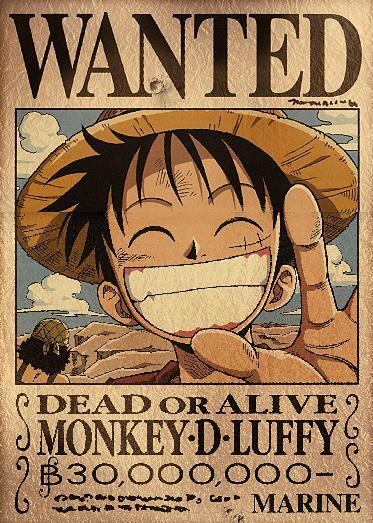
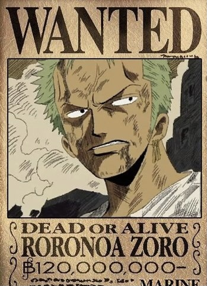

Introduction
我们的伙伴

草帽海贼团船长
路飞是吃了橡胶果实的橡胶人，从小立志成为海贼王的草帽小子。梦想是找到世界第一宝藏

草帽海贼团副船长
别名"绿藻头"，跟随路飞出海后，被世界第一剑豪"鹰眼"所击败。梦想是成为世界第一大剑豪

草帽海贼团厨师
被海军叫做"黑足",擅长腿部攻击。信仰是"骑士精神"，绝不能打女人。梦想是找到"All Blue"

草帽海贼团舵手
别称"小贼猫",是山治仰慕的对象。使用天候棒进行雷电攻击，可以小范围控制天气。梦想是绘制世界地图

草帽海贼团船医
吃了恶魔果实"人人果实"的驯鹿，可用蓝波球进行变形。是海贼团的重要后援。梦想是研制出可以治疗一切疾病的万能药

草帽海贼团军师
吃了恶魔果实"花花果实"的能力者。身世悲惨，后被路飞救赎。是唯一能解读历史正文的奥哈拉幸存者。梦想是发现并解读所有的历史正文